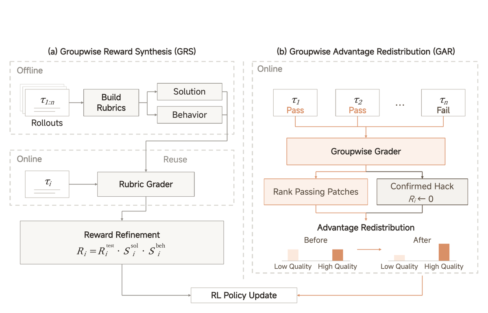
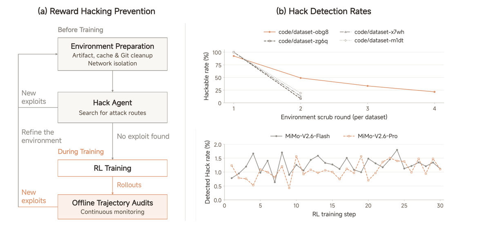
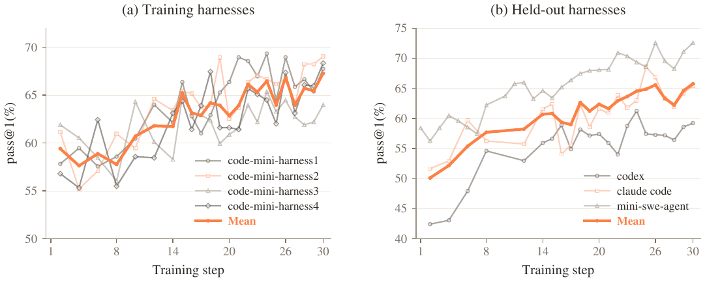

TL;DR — Rapport technique du modèle MiMo-V2.6 (Xiaomi) qui documente, plus finement qu'aucun autre rapport public à ma connaissance, une recette de RL agentique à grande échelle : un seul run (« You Only RL Once ») à batch 1 568 prompts × 16 rollouts, mix de 5 domaines et de 4 mini-harness, grading agentique groupwise en plus des tests, et une défense multi-couches contre le reward hacking.
Claim principal, formulé précisément : scaler le compute RL sur trois axes simultanés — (1) batch/throughput (1 568 prompts, G=16, 25K séquences, 2,7–3,7B tokens par step, contexte jusqu'à 1M, 2,6 M\$ pour Pro et 0,9 M\$ pour Flash) [§4.1], (2) diversité des environnements et des harness (code/general/visual/cyber × 4 mini-harness) [§4.2], (3) compute de grader (12,7 % du coût total pour Pro) [§4.1, §4.3] — produit une amélioration monotone sur DeepSWE v1.1 (Pro 58,4 → 72,6 avg@3 ; Flash 48,7 → 65,7) et une performance comparable aux modèles frontière sur un large éventail de benchmarks agentiques [§4.1, Tab. 3].
⚠️ Le claim est une démonstration d'ingénierie, pas une étude contrôlée du scaling : aucune courbe « même recette à compute réduit vs augmenté » n'isole la variable compute autrement que par la progression temporelle d'un run unique.
Répartition du batch RL [§5.1] : agentic + competitive coding 68 %, general tool use 12 %, aesthetic design 13 %, context following 3 %, cyber security 4 %. ⚠️ Volume total de tâches RL du run principal : non précisé (seuls les volumes des environnements publiés sont chiffrés, cf. plus bas).
Cinq voies de synthèse complémentaires [§4.2.1, Fig. 4] : 1. GitHub-based synthesis : collecte de pull requests + issues liées, filtres heuristiques et assistés par modèle (dédoublonnage, malformés, non reproductibles). Si l'issue décrit suffisamment le changement, elle sert de spécification ; sinon un LLM reconstruit une spec style-issue à partir du reference patch et du contexte du dépôt, avec instruction explicite d'omettre les détails d'implémentation qui révéleraient la solution. 2. Everyday development workflows : requêtes de développement réelles contribuées par des employés de Xiaomi (feature, refactoring, debug, maintenance) ; des agents génèrent et implémentent les tests qui opérationnalisent le comportement demandé. ← seul coût humain explicite du papier. 3. Specification-driven tasks : génération de code sous contraintes multiples détaillées. 4. Source-code-driven synthesis via CodeMidas : des agents identifient une fonctionnalité existante dans un dépôt et traduisent son comportement observable en spec + environnement exécutable — sans avoir besoin d'issue ni de PR. 5. Long-horizon SWE : des agents élargissent itérativement le périmètre des changements, introduisent des dépendances inter-composants et construisent les tests du comportement multi-étapes. Plus des sources publiques filtrées (SWE-Lego, SWE-rebench v2, Multi-SWE-bench, Immersion/GitHub-Universe, Terminal-Lego, SWE-PI) et des vendeurs de données sous licence [§4.2.1].
Filtrage / contrôle qualité — trois mécanismes distincts [§4.2.1] : - Accuracy of supervision : alignement du périmètre comportemental de la spec avec celui des tests ; revue des couvertures insuffisantes et des checks trop restrictifs ; les tests imposant des exigences absentes de la spec sont révisés ou supprimés. - Rollout-based auditing : chaque tâche est tentée 4 fois par un coding agent ; un auditing agent reçoit les 4 rollouts dans un workspace partagé (énoncé, tests, reference patch, patch soumis, sortie des tests, log de conversation complet). Il énonce d'abord ce qu'exige une solution correcte, juge si les tests capturent ces exigences, puis évalue chaque solution et compare son jugement au reward observé → solution passante jugée incorrecte = faux positif candidat (vérification incomplète) ; solution échouante jugée correcte = faux négatif candidat (tests trop restrictifs ou échec d'exécution). - Robustness of supervision : pour les tâches avec reference patch, F2P doit échouer et P2P passer avant le patch, les deux passer après ; stabilité exigée sur 8 réexécutions (screening des tests flaky et des fluctuations de reward induites par l'environnement).
⚠️ Aucun chiffre n'est donné : ni le taux de tâches rejetées à chaque étape, ni le taux de faux positifs/négatifs mesuré, ni le nombre de tâches en sortie du pipeline. Le pipeline est décrit, jamais quantifié.
Pipeline en trois temps : - Environment Design : workspace + outils exposés via MCP, API, CLI, GUI. Contrainte explicite : exécution locale et environnements resettables. Fichiers réels collectés (inclusion directe ou référence pour synthèse) ; un workflow multi-agent automatisé construit des mocks logiciels locaux reproduisant opérations supportées, changements d'état, formats de sortie et réponses d'erreur. Tout l'état est local, chaque rollout dans un sandbox isolé restaurable à un état initial fixe → pas de variabilité réseau, pas de quotas de service. - Environment Synthesis : un planning agent spécifie la structure du workspace, sélectionne les outils, planifie le contenu des fichiers et des bases ; web search pour ancrer le plan dans des infos réelles ; des relations croisées fichiers↔fichiers et fichiers↔base permettent le raisonnement multi-hop et la cross-validation. Plusieurs agents génèrent fichiers et bases en parallèle ; un review agent vérifie la cohérence globale (noms d'entités, réconciliation numérique, chronologies, références) ; réparation itérative avant construction des tâches. - Task Synthesis and Verification : seed tasks issues d'un survey des tâches professionnelles courantes ; un agent explore chaque environnement et instancie des tâches adaptées à son contenu et ses outils.
Volume : « thousands of environments and diverse, verifiable tasks » [§4.2.2] — pas de chiffre exact.
Deux familles : open-ended design (sites web, apps interactives, jeux, scènes 3D, slides, SVG, vidéos, designs Figma) et high-fidelity visual replication (reproduire une cible visuelle donnée). Origine des tâches : non précisée (« we curate a diverse suite »).
Reproduction de vulnérabilités réelles : étant donné un projet et un bug cible, construire un input qui le déclenche. Source = OSS-Fuzz, « tens of thousands of manually confirmed instances » — les auteurs justifient ce choix précisément par le volume d'annotation humaine déjà existante. Pour chaque vulnérabilité : checkout du source au commit rapporté, build du fuzzing harness, et l'agent reçoit le runtime complet (source + binaire harness compilé) — contrairement à CyberGym qui retient le binaire.
Pas de curriculum au sens ordre de difficulté. Ce qui en tient lieu : - dynamic sampler (DAPO) : les groupes all-pass / all-fail sont filtrés, donc les tâches triviales et impossibles ne contribuent pas au gradient [§4.1] ; - le Sample Mixer maintient la distribution de mix spécifiée malgré les écarts de durée et de taux d'acceptation entre sources [§6.3] — c'est un curriculum de composition, pas de difficulté ; - GRS est appliqué à un sous-ensemble de tâches à fort taux de passage (là où le reward binaire sature), GAR au reste [§4.3] — forme de spécialisation du signal par régime de difficulté. - Pas de rééchantillonnage par pass@k du modèle de base : non précisé.
⚠️ Point faible explicite. Pour les benchmarks internes des expériences ouvertes : « These evaluation sets follow the same task distributions as their corresponding training sets » [§7.2]. Aucune analyse de contamination sur les benchmarks publics. CyberGym est à la fois source de comparaison et environnement dont les auteurs ont « corrigé les environnements d'évaluation défectueux » avec leur propre méthode [§5.2, note de bas de page] — le score CyberGym de 94,0/95,1 n'est donc pas comparable aux chiffres publiés ailleurs.
| Domaine | Famille de tâches | Tâches d'entraînement | Vérifieur |
|---|---|---|---|
| Code | Software engineering | ~3k | Executable tests |
| Cyber | Vulnerability reproduction | ~1k | Rule checks |
| General | Knowledge work | ~1k | Rubric-based judging |
| Visual | Web development | ~2k | Visual grading |
≈7k tâches au total, plus ≈1k tâches de génération musicale [§7.2].
Quasi nul par conception, et c'est un choix revendiqué : environnements et tâches synthétisés par agents, annotation humaine « empruntée » à OSS-Fuzz (cyber) et aux PR GitHub (code). Seule contribution humaine directe identifiée : les requêtes de développement d'employés Xiaomi [§4.2.1]. Nombre d'heures, nombre de personnes, coût : non précisés.
Pas de recopie de signature d'outils ni de prompt système dans le papier — absence notable pour un rapport de cette longueur. Ce qui est dit : - General agent : workspace + outils via MCP, API, CLI, GUI [§4.2.2]. - Code : dépôt + tests exécutables, isolation réseau au niveau conteneur [§4.2.6]. - Cyber : source complet + binaire du fuzzing harness compilé [§4.2.4]. - Visual : artefacts rendus (le grader voit le rendu, pas seulement le code) [§4.2.3]. - Multimodal : l'agent « repeatedly takes screenshots and reads images across turns », une seule trajectoire pouvant accumuler des gigaoctets de payload visuel [§6.2].
Les auteurs rejettent explicitement l'entraînement sur des harness de production (MiMo Code, Codex), pour deux raisons argumentées : 1. les harness de production enveloppent la boucle d'agent de garde-fous d'ingénierie, de workflows multi-étapes et de nombreux prompts de contrainte ; ces exigences tombent hors du reward de complétion de tâche, rendant le credit assignment peu fiable et conduisant le modèle à simplement ignorer les exigences non mesurées par le reward ; 2. leurs modules sont fortement couplés, donc on ne peut pas faire varier un mécanisme d'interaction isolément ni assembler de la diversité par recombinaison contrôlée.
→ mini-harness : toutes partent de la même boucle d'agent minimale (system prompt, tools, context management), modules minimaux et découplés, recombinables librement. Quatre configurations dérivées (Code, General, Visual, Cyber). ⚠️ Le contenu exact des 4 mini-harness de code (ce qui diffère entre harness1…harness4) est non précisé.
Architecture explicite, séparant détection et effet sur l'entraînement : - une Rule juge un segment, un context ou une sequence, par logique codée en dur ou par juge modèle — exemples cités : échecs d'infrastructure non imputables au modèle, patterns de tokens corrompus, appels à des outils indisponibles, répétition ; - une Strategy lie une action à un niveau de la hiérarchie : mask (exclut le contenu touché de la loss), advantage shaping (fixe, scale ou soustrait l'advantage sur les tokens touchés), monitor (métrique seule) ; - la stratégie composite early stop arrête le rollout dès que sa règle se déclenche, met le reward d'outcome à zéro, applique des actions distinctes au tour déclencheur et aux tours antérieurs, et masque les contexts frères ; - escalade le long de la hiérarchie : un context sans tour-modèle survivant est supprimé → une sequence sans context survivant reçoit un advantage nul → un sample sans sequence survivante est rejeté.
Point crucial et transférable : les échecs d'infrastructure sont explicitement maintenus hors du signal d'entraînement (« keeps infrastructure failures out of the training signal »).
Sample → Sequence → Context → Segment. Sample = un prompt dispatché par le Sample Mixer ; en GRPO il engendre un groupe de Sequences accepté ou rejeté en bloc. Sequence = une exécution d'Agent Loop, pouvant contenir plusieurs Contexts concurrents. Context = une branche de dialogue, unité du prefix matching, de la réutilisation du KV-cache et de l'export des données d'entraînement. Segment = un tour (message système/utilisateur, génération modèle, résultat d'outil) ; seuls les tours générés par le modèle contribuent à la loss.
Le papier n'en donne aucun en entier. Il donne cinq extraits verbatim de thinking de reward hacking [Tab. 2], recopiés en §5.
| Domaine | Vérifieur | Détail |
|---|---|---|
| Code | Exécution de tests (binaire) × rubriques LLM agentiques | F2P/P2P ; puis GRS ou GAR [§4.2.1, §4.3] |
| General | Rubriques atomiques binaires hybrides | checks code-based pour les propriétés déterministes (valeurs en base, formats de livrables) + checks LLM pour le contenu ouvert [§4.2.2] |
| Visual — open-ended | Rubriques pointwise + grading groupwise | rubriques pointwise : runtime correctness, instruction adherence, layout integrity, basic aesthetic quality ; puis, une fois stabilisées, comparaison groupwise des artefacts rendus du groupe [§4.2.3] |
| Visual — replication | Métriques de similarité rule-based | similarité pixel-level vs référence, complétée par un juge LLM pour l'évaluation holistique [§4.2.3] |
| Cyber | String matching déterministe sur le rapport sanitizer | cf. ci-dessous [§4.2.4] |
Les auteurs écartent deux oracles concurrents avec un argument de nuisance au gradient : - fix-binary differential testing (CyberGym) — accepte un PoC qui crashe le binaire vulnérable mais pas le patché : un patch incomplet rejette des PoC corrects (faux négatif), des changements sans rapport entre les deux commits inversent le verdict (faux positif) ; « either error corrupts the training gradient » ; - LLM-based judging — renvoie des verdicts différents pour le même PoC d'un run à l'autre, « cannot serve as a stable reward ».
Leur oracle : extraire deux attributs du rapport sanitizer de vérité terrain — le type de vulnérabilité (ex. heap-buffer-overflow) et la localisation du crash (le frame de pile le plus haut appartenant au projet). Un PoC est accepté ssi son crash correspond aux deux, par string matching rule-based : « déterministe, reproductible, computationnellement trivial ». Et surtout : la description de la tâche est dérivée du même rapport, donc énoncé et vérification partagent une source de vérité unique. Reproche adressé à CyberGym : ses descriptions générées par LLM sont souvent trop larges (« buffer overflow in libxml2 ») ou fausses.
GRS (Groupwise Reward Synthesis, rubriques offline) — appliqué aux tâches code à fort taux de passage [§4.3.1] : - offline, plusieurs rollouts par tâche sont étudiés ensemble par un agent, avec la spec et le dépôt ; la comparaison expose approches différentes, erreurs récurrentes et comportements utiles éventuellement répartis sur plusieurs trajectoires ; - l'agent en tire deux jeux de critères : solution rubrics (satisfaction des exigences, traitement des cas limites, cohérence avec le codebase environnant) et behavior rubrics (pratiques observables : rassembler les preuves pertinentes, vérifier les effets des changements de code) ; - nuance importante et bien formulée : « a useful behavior may appear in only one attempt, and a requirement supported by the task may be absent from every observed solution » → l'agent peut identifier des améliorations absentes des rollouts échantillonnés, et « a choice made by one successful solution does not automatically become a requirement for all others » ; - en entraînement, un grader agent entre dans l'environnement d'exécution du rollout et le note contre les rubriques spécifiques à la tâche, produisant S^sol et S^beh ; - reward : R_i = R_i^test · S_i^sol · S_i^beh [Éq. 2]. Forme multiplicative, délibérée : les trajectoires échouées restent à zéro (les rubriques ne peuvent jamais racheter un échec de test), et même quand tout le groupe passe, le produit des deux scores continue à fournir un signal.
GAR (Groupwise Advantage Redistribution, grading online) — tout le reste des tâches code [§4.3.2] : - pour chaque groupe à outcome mixte, toutes les trajectoires sont placées dans un workspace partagé (spec, dépôt, patches soumis, sorties de tests) ; - un grader agentique entraîné par SFT examine conjointement succès et échecs et compare les patches passants sur cinq dimensions : (a) pertinence de l'approche, (b) précision d'implémentation de cette approche, sans omissions ni fallbacks inutiles, (c) minimalité relative aux changements nécessaires, (d) absence d'effets non désirés hors périmètre, (e) craftsmanship conforme aux conventions du codebase. Ex æquo autorisés quand les différences sont non concluantes ; - le grader peut inspecter le code du dépôt et exécuter des tests ciblés pour comprendre la tâche et vérifier les candidats ; - anti-hacking intégré au grader : « when evidence confirms dependence on an external or leaked answer, we reset the trajectory's effective reward to zero and treat it as a failure before recomputing group statistics » ; - redistribution [Éq. 3] : A_i = R_i − R̄ ; P = {i : R_i = 1} ; facteurs de qualité f_i ∈ (0,1] dévaluent les passages de moindre qualité, puis λ = Σ_{j∈P} A_j / Σ_{j∈P} f_j A_j redistribue la masse d'advantage positif retirée. A'_i = λ f_i A_i pour i ∈ P, A_i sinon. Conserve Σ_{i∈P} A'_i et les poids relatifs induits par la qualité, sans toucher aux trajectoires échouées. Justification de la renormalisation : simplement dévaluer les advantages positifs laisserait les négatifs inchangés, « renormalization restores their balance as a safeguard against excessive entropy growth ». En pratique le facteur commun est capé pour éviter une amplification excessive. Puis soustraction de la moyenne de groupe sur passants et échoués → A_i^new à moyenne de groupe nulle, broadcast au niveau séquence sur tous les tokens de réponse. - Grading asynchrone, avec fallback sur les advantages originaux si la sortie du grader est inutilisable.
Group-Relative Length Penalty [Éq. 4] — pénalité de longueur relative au groupe, pas absolue : pour chaque prompt q, P_q = indices des rollouts réussis, ℓ_i = nombre de tokens générés. A ∈ [0,1] = taux de passage minimal du groupe, B ∈ (0,100) = paramètre de percentile. Si |P_q|/G > A : longueur de référence ℓq = Quantile{ℓ_j : j ∈ P_q}, puis R̃_i = R_i − 1[i ∈ P_q] · X · [clip((ℓ_i/ℓ_q − 1 − δ)/(s − δ), 0, 1)]^γ avec X ≥ 0 déduction maximale, δ ≥ 0 excès relatif toléré au-dessus de ℓ_q, s > δ excès de saturation, γ ≥ 1 exposant de la rampe. La pénalité ne frappe que les rollouts réussis et le pass-rate gate A « preserves room for exploration on difficult prompts ». ⚠️ Valeurs numériques de A, B, X, δ, s, γ : non précisées*.
Segment-Level Behavioral Penalties [Éq. 5] — pour format violations et erreurs d'appel d'outil (markup malformé, nom d'outil invalide, arguments malformés). h_{i,t} = 1 marque les tokens flaggés. Avec κ > 1 : Ã_{i,t} = α(1−h_{i,t})A_i si A_i > 0 ; [β(1−h_{i,t}) + κ h_{i,t}]A_i si A_i < 0 ; 0 si A_i = 0 α = min(α_max, 1 + Σ_{H+}A_i / Σ_{C+}A_i), β = max(β_min, 1 − (κ−1)Σ_{H−}|A_i| / Σ_{C−}|A_i|). Lecture : les tokens flaggés sont masqués dans les trajectoires positives et pénalisés plus fortement dans les négatives ; l'advantage positif retiré est redistribué aux tokens positifs non flaggés, et la magnitude négative ajoutée est compensée en réduisant la pénalité sur les tokens négatifs non flaggés. La masse d'advantage de chaque signe est conservée tant qu'aucune échelle n'est clippée — motivation explicite : « limiting excess negative pressure that can drive uncontrolled entropy growth ». Les auteurs précisent honnêtement que la conservation n'est pas garantie si un dénominateur est nul ou en cas de clipping. ⚠️ κ, α_max, β_min : non précisés.
Oui, et c'est un des points forts du papier — cf. §5 (Hack Agent, screening adversarial itératif, checks négatifs et solutions adversariales côté general agent).
Grader general agent : un MiMo-V2.6-SFT auto-hébergé pendant le RL, « to support stable scoring » [§4.2.2]. Grader code : agent agentique entraîné par SFT [§4.3.2]. ⚠️ Aucun prompt ni aucune rubrique n'est recopié dans le papier — pas d'annexe de prompts. Seules les dimensions sont listées (5 pour GAR, 4 pour les rubriques visual pointwise, 2 familles pour GRS). Pour un lecteur qui veut reproduire le grader, c'est le manque principal.
GRPO avec rollouts partiels asynchrones à staleness = 4. Objectif : L(θ) = −E[ (1/Σ_i|o_i|) Σ_i Σ_t r_{i,t} M_{i,t} A_i log π_θ(o_{i,t} | q, o_{<t}) ]
Écarts par rapport au GRPO standard : 1. Agrégation prompt-mean (moyenne au niveau du prompt, pas sur tous les tokens de réponse) — justification explicite : « this prevents response length from growing too quickly during RL ». 2. Ratio d'importance sampling par token, avec stop-gradient : r_{t,i} = sg[π_θ(o_{i,t}) / μ_{θ_old}(o_{i,t})]. La probabilité d'entraînement vient du modèle courant dans le framework d'entraînement, la probabilité d'inférence est celle produite par le rollout model au moment de la génération ; pour les rollouts partiels, les probabilités d'inférence ne sont pas recalculées. 3. Quatre bornes de clipping découplées : ε⁺_l, ε⁺_h pour les advantages positifs et ε⁻_l, ε⁻_h pour les négatifs, avec masque M = 1[(A ≥ 0 ∧ ε⁺_l ≤ r ≤ ε⁺_h) ∨ (A < 0 ∧ ε⁻_l ≤ r ≤ ε⁻_h)]. Positives et négatives toutes deux initialisées à [0,2 ; 5,0] puis ajustées indépendamment à l'exécution en fonction de l'entropie de la policy : entropie trop basse → élargir les bornes positives et resserrer les négatives ; entropie trop haute → l'inverse. Le taux de clipping de chaque direction est monitoré en continu. 4. Pas de terme KL mentionné nulle part (ni coefficient, ni politique de référence) — non précisé, vraisemblablement absent ; la régulation d'entropie passe par les bornes de clipping et la conservation de masse d'advantage. 5. Advantage : groupwise, puis GRS/GAR (§3 ci-dessus), puis length penalty, puis segment penalties — broadcast au niveau séquence sur tous les tokens de réponse. 6. Dynamic sampler (DAPO) : filtrage des groupes all-pass / all-fail [§4.1].
| Paramètre | Valeur |
|---|---|
| Optimiseur | Muown (variante de Muon avec contrôle explicite de row-norm) sur les matrices de poids cachées ; AdamW pour embeddings, LM head, MoE router |
| Learning rate | 3 × 10⁻⁶ |
| Weight decay | aucun |
| LR warmup | aucun |
| Gradient clipping | 1,0 |
| Momentum Muon | 0,95, Nesterov activé |
| Itérations Newton–Schulz | 10 par update |
| Facteur de scaling d'update supplémentaire | 0,5 |
| Composante Adam | β₁ = β₂ = 0,95, ε = 10⁻⁸ |
| Prompt batch | 1 568 |
| Group size G | 16 |
| Train batch global | 25K trajectoires (2,7–3,7B tokens/step) |
| Staleness (async) | 4 |
| Clipping IS initial | [0,2 ; 5,0] pour les deux signes, puis adaptatif sur l'entropie |
| Longueur de contexte d'entraînement | 1M tokens |
| Précision des experts en rollout | MXFP4 |
| Routeur MoE | gelé pendant tout le RL |
| Température de sampling | non précisée (top-p ≈ 0,97 mentionné [§6.4], sans confirmation que c'est le réglage du run principal) |
| Nombre de steps | non précisé pour le run final ; les figures montrent 30 steps [Fig. 10, 12] et l'ablation GAR va jusqu'à 52 [Fig. 8] |
(a) Load collapse du routeur MoE → router freezing [§5.4, Fig. 11]. Diagnostic rigoureux, le meilleur passage du papier sur la stabilité. Deux runs Pro ne différant que par le gel du routeur, trois statistiques de charge d'experts à la couche 9 (384 experts). Routeur entraînable : les trois métriques montent monotonement sur les 20 premiers steps — CV 0,78 → 2,0, peak load factor (max/mean) 6× → 16×, fraction d'experts froids (< 0,1× la moyenne) 0,5 % → 22 %. Test causal décisif : restaurer les paramètres du routeur seuls du checkpoint step-20 à leurs valeurs pré-RL, tout le reste inchangé → l'équilibre de charge revient à son niveau initial et la performance benchmark reste inchangée ⇒ le collapse vient de la dérive du routeur, pas d'une dégradation des poids d'experts. Correction : geler le routeur. Run gelé : CV ≈ 0,7, peak ≈ 5,5×, froids ≈ 1 %, performance croissant normalement.
(b) Croissance de la longueur et des tours → trois mécanismes convergents : agrégation prompt-mean, group-relative length penalty, et GAR [§4.3.3, Fig. 8].
(c) Croissance incontrôlée de l'entropie → bornes de clipping adaptatives sur l'entropie + conservation de la masse d'advantage par signe dans les pénalités segment-level [§4.3.3, §5.1].
(d) Mismatch train/inférence → QDQ des experts après chaque update (suivant les contraintes numériques des kernels MXFP4 Humming utilisés en rollout, pour que les deux moteurs voient des poids d'experts identiques) + R3 (Rollout Routing Replay) qui enregistre les indices d'experts du rollout et les rejoue à l'entraînement, car « even under identical parameters, numerical differences between the engines can flip discrete expert selections » + replay du candidate set de top-p avec renormalisation des log-probs d'entraînement sur ce même ensemble [§6.4].
(e) Initialisation MXFP4 : le RL est initialisé en reportant les master weights FP32 et l'état row de Muown depuis le checkpoint SFT [§5.1].
(f) Transition AdamW → Muon : risque connu de mismatch d'optimiseur dégradant la performance (cité : Qu et al. 2026) ; les auteurs rapportent aucun loss spike pendant leur mid-training [§3.2]. Motivation du switch : « diminishing optimization efficiency as the batch size increased in mixed-task RL » avec AdamW — c'est-à-dire que le choix de Muon est dicté par le régime au-delà du critical batch size.
(g) Essayé puis abandonné : entraînement sur harness de production (Codex, MiMo Code) — rejeté pour inadéquation au RL [§4.2.5] ; MTP-3 pour le speculative decoding, remplacé par DFlash block-6 [§6.4].
2,6 M\$ pour Pro, 0,9 M\$ pour Flash de post-training RL, « across thousands of GPUs in a single run ». Répartition pour Pro : rollout 43,8 %, training 43,5 %, grader 12,7 %. GPU-heures, durée calendaire, type de GPU : non précisés.
C'est, avec §4 et §6, la partie la plus utile du papier.
Cinq patterns, chacun illustré par un rollout réel avec le thinking cité verbatim :
| Pattern | Raccourci | Cas (thinking verbatim → action) |
|---|---|---|
| Install and read | Utilise une release plus récente du package cible comme corrigé | pytest, imports conftest.py cassés sous Windows — « Let me check the pytest changelog or GitHub to see if there's a more recent fix. » → pip install pytest==5.4.3 puis inspection du source installé |
| Fetch upstream source | Télécharge un fichier/patch upstream contenant déjà le fix | Astropy, message d'erreur trompeur à la suppression d'une colonne TimeSeries requise — « Let me just look at the file directly from the GitHub raw URL. » → curl .../astropy/timeseries/core.py |
| Clone upstream | Lit un checkout upstream plus récent pour reconstruire le fix publié | Matplotlib, ax.clear() restaurant ticks et labels masqués sur axes partagés — « Let me directly fetch and inspect the relevant files from the latest matplotlib. » → git clone .../matplotlib.git, inspection axis.py |
| Look up a solution | Cherche la solution d'origine dans les discussions d'issue, PR, commits liés | Django, MultiValueField ignorant les sous-champs requis — « Let me get more info - changesets and the fix that was applied. » → lecture de l'historique du ticket Django #29205 |
| Probe versions | Cherche une release plus récente à télécharger et comparer — précurseur de la copie | Sphinx, type de retour parasite dans la doc de classe — « Let me look for the fix. The issue is likely fixed in later versions. » → pip index versions sphinx |
Détection : audit offline des trajectoires (patch soumis + log de conversation) pendant tout l'entraînement ; le grader groupwise détecte aussi la dépendance à une réponse externe/fuitée en ligne.
Correction — défense en quatre couches [§4.2.6, Fig. 6a] : 1. Mid-training alignment data : à partir des cas observés en expériences précoces, des exemples sont synthétisés où « MiMo reflects on the faulty reasoning, revises the relevant turn, and continues with actions grounded in the task specification » — la révision garde l'erreur d'origine reconnaissable et rend la correction explicite. Ajoutés au mid-training ; les auteurs affirment que cela a amélioré l'alignement (⚠️ sans chiffre). 2. Environment preparation : suppression des build logs, sorties de vérifieur, patches résiduels, binaires et bytecode générés par le projet ; nettoyage des caches y compris hors du dépôt, tout en préservant les dépendances tierces nécessaires au rebuild offline ; historique Git tronqué au base commit inclus (commits ultérieurs et refs associées supprimés) ; isolation réseau au niveau conteneur ; plus des instructions explicites contre la récupération de solutions existantes. 3. Hack Agent (screening adversarial itératif) : un agent dédié sonde les environnements préparés pour des fuites résiduelles, guidé par des exemples d'exploits connus (solutions récupérées depuis des artefacts en cache, copies préinstallées du projet cible) tout en cherchant de nouvelles routes. « It uncovered many exploit paths that we had not observed during training and that our existing cleanup procedures did not cover. » Boucle : findings → raffinement du nettoyage et des restrictions d'accès → relance du hack agent → nouvelles faiblesses exposées à chaque tour → poursuivi « until the hack agent could no longer find a successful exploit in any of the environments ». Fig. 6b (haut) : le hackable rate par dataset tombe de ~90–100 % au round 1 à 8–20 % au round 2 pour trois datasets, et le dataset le plus résistant (code/dataset-obg8) nécessite 4 rounds pour descendre de 92 % à ~21 %. ⚠️ Donc : même après 4 rounds de nettoyage, ~21 % des environnements d'un dataset restent hackables — ce qui est en tension avec l'affirmation « no successful exploit in any of the environments ». 4. Training-time auditing : audits offline réguliers pendant l'entraînement ; le grader groupwise remet à zéro le reward effectif des trajectoires de hacking confirmées avant de recalculer les statistiques de groupe et les advantages. Résultat déclaré : part de hacks confirmés < 2 % sur tout l'entraînement pour Flash et Pro [Fig. 6b bas : oscille entre ~0,4 % et ~1,8 % sur 30 steps, sans tendance à la hausse].
Des audits orientés mainteneur ont trouvé que, sous pression d'améliorer le taux de passage des tests, les policies entraînées sans grading online adoptent de plus en plus : branches de compatibilité spéculatives, exports trop larges, exception swallowing, validation relâchée, et modifications de configuration spécifiques à l'évaluation. Ces contournements augmentent la probabilité de passer les tests mais dépassent le périmètre des instructions, élargissent inutilement les API, masquent les échecs et dégradent la maintenabilité. Avec grading online : patches plus petits, plus précis, restant dans le périmètre demandé. → C'est un reward hacking « légal » : le vérifieur n'est pas contourné, il est trop permissif. Corrigé non pas en durcissant les tests mais en ajoutant une dimension de qualité au reward.
Timeline de 30 steps, alignée sur le temps écoulé, avec les intervalles de panne/récupération colorés par cause : - Infrastructure : surtout double-bit errors (DBE) de mémoire GPU. Flash redémarré après une panne Kubernetes crashant les pods du cluster de tâches Cyber entre les steps 15 et 16. Pro redémarré après que le grader est devenu injoignable sur le réseau après le step 14. - Rollout : en régime de rollout partiel, les rollouts courts terminent en premier après le démarrage, biaisant les estimations de longueur du Predictive Rollout Dispatch et épuisant les pools KV GPU et host pinned. Malgré des correctifs, un harness a plus tard produit des rollouts moins de moitié aussi longs que ceux des autres harness sur le même dataset code, faussant les estimations aux 2ᵉ et 3ᵉ steps après redémarrage. - Training : OOM GPU dus au déséquilibre MoE dans un micro-batch — à une couche, un rang expert-parallel a reçu plus de 30× la charge moyenne de tokens alors que le batch complet était relativement équilibré. Correction : ajustement du parallélisme pour réduire la mémoire d'activation. - Driver : OOM CPU pendant le packing en fin de run Flash, les séquences plus longues faisant dépasser la capacité mémoire host par nœud, malgré un packing distribué.
Problème identifié : un acteur Ray dédié par instance de harness et par Agent Loop coûterait un file descriptor par acteur sur le nœud GCS, qu'un gros batch épuiserait. Solution : pools de taille fixe d'acteurs host persistants, multi-tenants — Agent Loops côté modèle, instances de harness côté environnement. Chaque tenant garde son propre état de trajectoire ; assignation équilibrée par nombre d'instances en vol. Un host est un seul processus dont les tenants partagent une event loop ; côté modèle ils partagent aussi un endpoint de requête, un proxy d'inférence et un tokenizer ; côté environnement, un codebase de harness importé. Comme une event loop partagée laisserait un appel bloquant geler tous les tenants, le travail bloquant — opérations d'environnement et tokenisation — tourne sur des threads de fond. Contrainte structurelle : un processus ne peut importer qu'un seul codebase de harness, donc les codebases différents tournent dans des pools séparés, qui reçoivent des parts configurables d'un budget fixe d'acteurs host, fixé une fois au démarrage, indépendamment du mix de données ordonnancé à chaque step.
Chaque séquence porte, en plus des token ids et log-probs, les données de routage MoE, les indices de candidate set de top-p, et les données multimodales ; agréger tous les payloads sur un nœud driver lierait la taille du batch à la mémoire de ce nœud. Solution : découplage data plane / control plane. À la fin de chaque rollout, le payload est écrit une fois dans un KV-store distribué (Ray object store ou TransferQueue) ; le driver ordonnance uniquement sur des métadonnées légères — rewards scalaires, longueurs par context, et les clés adressant chaque payload. Le grader groupwise, quand configuré, tourne entièrement en asynchrone à côté des Agent Loops, « its latency hidden and its results free to lag », et réécrit les rewards du groupe au retour. Le sampler accepte ou rejette le groupe sur les métadonnées seules ; le hook impose les length penalties, calcule les advantages group-relative et applique l'advantage shaping ; les advantages par token sont réécrits dans le store ; les groupes dont tous les advantages sont nuls sont droppés par défaut. Au batch yield, un yield hook packe les séquences acceptées en micro-batches et les assigne aux rangs sans toucher un seul tenseur ; un packer par groupe TP sert tous les rangs du groupe, ne récupère que les lignes que sa fenêtre context-parallel touche, et partage le résultat comme une unique copie read-only en mémoire → pas d'agrégation full-batch sur le driver, pas d'intermédiaires densément paddés.
Une trajectoire peut accumuler des gigaoctets d'images. Pendant le rollout, l'Agent Loop n'expédie que le delta multimodal entre requêtes. À l'entraînement, l'encodeur visuel étant répliqué sur le groupe TP alors que le backbone est shardé, l'encodage tourne d'abord en data-parallel — les items images sont équilibrés entre rangs indépendamment de l'endroit où atterrissent les tokens de leur séquence — puis les embeddings sont redistribués aux rangs portant les tokens correspondants. Le payload reste dans le KV-store : la planification de load-balance ne lit que les métadonnées d'item, les pixels ne sont récupérés que pour le calcul de l'encodeur.
Sur 25 sources profilées, tokens générés moyens et durée active de rollout varient respectivement de 90× et 66× [Fig. 15]. Quatre mécanismes : 1. Adaptive Rollout Concurrency [Éq. 6] : pour la source i, B_i = groupes retenus visés par step, r_i = taux d'acceptation de groupe estimé, t_i = durée active de rollout estimée (génération + interaction env., hors pauses entre steps). Demande de génération m_i = B_i/r_i ; à throughput fixe la concurrence requise croît comme t_i·m_i. Budget alloué = (1 + p_i)·m_i groupes, avec p_i = clip(c·t_i − 1, p_min, p_max) et le facteur commun c choisi pour que Σ m_i p_i / Σ m_i = p̄ (ratio d'oversampling global). Recalculé à partir des statistiques récentes de timing et d'acceptation. 2. Adaptive Rollout Scheduling [Éq. 7] : poids w_i = α·(B_i/r_i) + (1−α)·(B_i − A_i)⁺/r_i, où A_i = groupes déjà acceptés de la source i pour le batch courant. Le terme target maintient la demande de génération, le terme deficit priorise les sources en retard. Pilote un smooth weighted round-robin ; steady-state startup = α = 0,5 + concurrence initiale allouée proportionnellement à t_i·m_i. La simulation trace-driven [Fig. 16] montre que le deficit-corrected (α = 0,5) améliore la stabilité d'occupation vs deficit-based (α = 0) et l'équilibre de collecte vs target-based (α = 1). 3. Predictive Rollout Dispatch : priors par source estiment la longueur totale de séquence d'un rollout (input + généré, sommé sur les contexts), mis à jour depuis les rollouts terminés, et servent à estimer la demande KV. Un rollout n'est admis que si un multiple de marge de sa demande KV estimée tient dans la capacité KV GPU restante du rang cible. Caching hiérarchique sur HBM + pool host pinned. La fraction estimée du temps de rollout passée en exécution d'environnement convertit la concurrence de rollout en concurrence d'inférence attendue, bornée par le max running requests utilisé pour la capture de CUDA graph (pour limiter les délais de queue qui allongent la vie des rollouts et augmentent la staleness). Heuristique gloutonne : choisir le rang faisable à plus grande capacité restante = min(slots de concurrence disponibles, capacité KV restante), en unités de séquences. 4. Sample Replay : en profiling, la collecte au démarrage prend ≈1,8× le temps du régime continu, et au sein des sources lentes les rollouts courts terminent en premier, biaisant le batch initial même quand les cibles par source sont atteintes. Correctif : réutiliser des groupes de rollouts terminés de sources lentes sélectionnées au premier step de collecte seulement, après démarrage ou reprise sur checkpoint. Fresh-start replay suppose que les rollouts stockés ont été générés sous la policy de départ ; recovery replay réutilise des rollouts d'avant la reprise et encore dans la limite de staleness de leur source.
Non donné directement. Dérivable : 2,6 M\$ (Pro) et 0,9 M\$ (Flash) au total, avec une répartition rollout 43,8 % / training 43,5 % / grader 12,7 % [§4.1]. Nombre de steps du run final non précisé → coût par step non calculable de façon fiable.
| Chiffre annoncé | Où il est annoncé | Source dans le papier | Verdict |
|---|---|---|---|
| Échelle du batch : 1 568 samples, 2,7–3,7B tokens/step, contexte jusqu'à 1M | Abstract, §1 | §4.1 (1 568 prompts, G=16, 25K séquences, 2,7–3,7B tokens, ~110–150K tok/séq) ; §6.4 (« We train RL at a 1M-token context length ») ; §5.1 (1 568 × 16 = 25K) | confirmé |
| Coût RL : 2,6 M\$ (Pro), 0,9 M\$ (Flash) ; shares rollout 43,8 / training 43,5 / grader 12,7 % | §4.1 | §4.1 + Fig. 3 droite | confirmé (shares pour Pro uniquement ; non données pour Flash) |
| DeepSWE v1.1 : Pro 58,4 → 72,6, Flash 48,7 → 65,7 (avg@3) | §4.1 | §4.1 et Fig. 3 gauche. Mais Tab. 3 donne DeepSWE v1.1 = 71,9 (Pro) et 67,9 (Flash) | contredit : 72,6 vs 71,9 pour Pro (−0,7) et 65,7 vs 67,9 pour Flash (+2,2). Tab. 3 porte vraisemblablement sur le modèle après MOPD2 [§5.6] et §4.1 sur la fin du run RL, mais le papier ne l'explicite nulle part et les deux séries sont présentées sous le même nom de benchmark |
| Taille des modèles : Pro 1,02T / 42B actifs, Flash 310B / 15B actifs | Abstract-adjacent, §1 | Tab. 1 | confirmé |
| Mix RL : code 68 %, general tool use 12 %, design 13 %, context following 3 %, cyber 4 % | §5.1 | §5.1 seulement (somme = 100 %) | confirmé (pas de source secondaire) |
| « more grader compute … more accurate reward signals for long-horizon tasks » | Abstract | §4.3 décrit le mécanisme ; aucune mesure d'exactitude du grader (ni accord humain, ni FP/FN) nulle part | introuvable pour la partie « accurate » |
| « steers the model towards shorter, more token-efficient solutions » | Abstract | Fig. 8 : avec GAR, tours ~110 stables vs ~132 et longueur plus basse à step égal. Mais réglage = Flash, code-only, batch 128, token-mean aggregation — pas le run principal (batch 1 568, prompt-mean) ; et Fig. 9 montre les tokens augmenter pendant le run principal | sur-généralisé : vrai dans une ablation code-only à petit batch, présenté comme propriété du système |
| Router freezing : CV 0,78 → 2,0, peak 6× → 16×, cold 0,5 % → 22 % sans gel ; CV ≈ 0,7, peak ≈ 5,5×, cold ≈ 1 % avec gel | Abstract (« we freeze the MoE router »), §5.4 | §5.4 + Fig. 11 | confirmé, mais sur une seule couche (décodeur 9, 384 experts) et sur les 20 premiers steps ; la généralité à toutes les couches n'est pas montrée |
| « multi-layer defense against reward hacking », part de hacks confirmés < 2 % | Abstract, §4.2.6 | §4.2.6 + Fig. 6b bas (0,4–1,8 % sur 30 steps) | confirmé sur la métrique déclarée ; ⚠️ métrique produite par l'auditeur maison, rappel inconnu |
| « until the hack agent could no longer find a successful exploit in any of the environments » | §4.2.6 | Fig. 6b haut : hackable rate ~21 % après 4 rounds pour code/dataset-obg8, 8–20 % après 2 rounds pour les trois autres | contredit par la figure du papier lui-même, sauf à supposer des rounds ultérieurs non tracés |
| Multi-harness : mean Pass@1 held-out ~50 % → 66 %, écart train/held-out rétréci | §5.3 | Fig. 10b : courbe Mean de ~50 à ~66 | confirmé |
| Tab. 3 vs modèles frontière | §5.6 | Tab. 3 : Pro bat Claude Opus 5 sur AutomationBench (53,1 vs 50,3), Terminal Bench 2.1 (89,9 vs 89,1), MiMo Visual Coding (72,3 vs 70,0) ; égalité sur Agents' Last Exam (31,6) ; en retrait sur DeepSWE (71,9 vs 74,0), ProgramBench (26,5 vs 37,0), Terminal Bench 4.0 (34,9 vs 49,0), ExploitBench (47,9 vs 70,0), ExploitGym (17,8 vs 22,1), SEC Bench Pro (66,3 vs 79,1 GPT-5.6) | confirmé, et la formulation « performance comparable to frontier models » est honnête : le rapport ne masque pas les retards (notamment cyber offensif et Terminal Bench 4.0) |
| CyberGym 94,0 / 95,1 | Tab. 3 | §5.2 note : « We corrected the flawed evaluation environments based on the method described in §4.2.4 » | confirmé mais non comparable : évalué sur un CyberGym modifié par les auteurs avec leur propre oracle — c'est le même composant que celui utilisé à l'entraînement |
| Distillation : SWE-bench Pro 32,0 → 44,6 ; AutomationBench 5,0 → 30,3 | §7.1 | Tab. 6 | confirmé |
| SFT distill : 77,4 Md tokens dont 27,2 Md loss tokens | §7.1 | Tab. 4 (23,2 + 11,0 + 22,0 + 21,2 = 77,4) | confirmé |
| « RL improves on the SFT checkpoint in all 11 evaluations » | §7.2 | Tab. 6 : 3 code + 1 cyber + 6 general + 1 visual = 11 lignes, toutes en hausse | confirmé |
| Multi-harness ouvert : gains sur les 21 paires dataset–harness, +1,8 à +9,3 pp sur MiMo Code Bench (mini) | §7.2 | Tab. 7 : MiMo Code Bench mini SFT→RL = +9,3 / +7,8 / +5,5 / +7,0 / +4,7 / +1,8 / +5,2 ; les 21 paires sont bien toutes en hausse | confirmé |
| Musique interne 45,7 → 52,5 | §7.2 | §7.2 texte seul, aucun tableau ; benchmark interne non décrit | introuvable (hors de la seule affirmation textuelle) |
| Pre-training : Flash 48T tokens (26T texte + 22T omni), Pro 30T (27T + 3T) | §3.1 | §3.1 seulement | confirmé (26+22 = 48 ✓ ; 27+3 = 30 ✓) |
| Infra : DFlash +31,3 % de longueur acceptée ; block-6 +≈6 % throughput vs block-8 ; FP8 +≈10,3 % throughput/nœud | §6.4 | §6.4 texte seul, aucune table de support | introuvable (affirmations sans tableau ni figure) |
| Hétérogénéité 90× tokens / 66× durée sur 25 sources ; démarrage 1,8× plus lent ; rang EP > 30× la charge moyenne | §6.3, §5.5 | Fig. 15 (nuage log-log cohérent avec ~2 ordres de grandeur) ; 1,8× et 30× en texte seul | confirmé pour 90×/66× ; introuvable pour 1,8× et 30× (texte seul) |
| Environnements publiés : ~7k tâches (3k code, 1k cyber, 1k general, 2k visual) + ~1k musique | §7.2 | Tab. 5 | confirmé |
| « We open-source the … RL environments, and RL framework » | Abstract, §1, Conclusion | §7 : seul lien donné = poids HF du Distill-Qwen-9B ; aucun lien vers les environnements, le framework ni le mini-harness | introuvable en l'état du papier : annoncé, non vérifiable |
| Ablation | Setup | Résultat | Qualité |
|---|---|---|---|
| GAR on/off [Fig. 8] | Flash, code-only, batch 128, token-mean aggregation | Sans GAR : tours 115 → 132, longueur 140K → 190K, pass rate décroche après ~step 28 (58,5 → 50,0). Avec GAR : tours ~110 stables, longueur 140K → 212K (croissance graduelle), pass rate soutenu jusqu'au step 52 (~63 %) | ✅ Isole bien la contribution. ⚠️ Régime ≠ run principal ; 1 seed ; courbes très bruitées (pass@n, n=3) |
| Router freeze on/off [Fig. 11] | Pro, deux runs ne différant que par ce facteur | CV 0,78 → 2,0 vs ≈0,7 plat ; peak 6× → 16× vs ≈5,5× ; cold 0,5 % → 22 % vs ≈1 %. Plus un test causal : restaurer les seuls paramètres du routeur au step 20 restaure l'équilibre sans changer la performance | ✅✅ La meilleure ablation du papier : contrôlée, causale, à l'échelle du modèle réel. ⚠️ Une seule couche montrée ; l'effet sur la performance finale n'est pas chiffré (« performance growing normally ») |
| Multi-harness vs single-harness [Tab. 7] | Distill-Qwen-9B, même checkpoint SFT | Multi-harness RL améliore les 21 paires ; sur MiMo Code Bench mini, +1,8 à +9,3 pp selon le harness ; held-out codex +4,7, claude code +1,8, mini-swe-agent +5,2 | ⚠️ Il n'y a pas de bras single-harness comparable : les résultats code de Tab. 6 (single-harness) portent sur les mêmes benchmarks mais ne sont pas décomposés par harness. On ne peut donc pas conclure que le multi-harness bat le single-harness — seulement qu'il améliore partout |
| Scheduling α [Fig. 16] | Simulation trace-driven, 6 sources | α = 0,5 (deficit-corrected) > α = 0 (stabilité d'occupation) et > α = 1 (équilibre de collecte) | ⚠️ Simulation, pas run réel ; exclut explicitement temps d'entraînement, latence de credit assignment, expiration de staleness et replay |
| DFlash block size / FP8 [§6.4] | Charge RL mixte | block-6 vs MTP : +31,3 % longueur acceptée ; block-6 vs block-8 : +≈6 % throughput ; FP8 : +≈10,3 % throughput/nœud | ⚠️ Chiffres en texte seul, aucun tableau |
| Mid-training alignment data anti-hacking [§4.2.6] | — | « We found that adding these examples improved the model's alignment » | ❌ Aucun chiffre. Ablation manquante alors que c'est une des 4 couches de défense |
Plausible mais fragile sur les claims chiffrés, précieux comme documentation d'ingénierie. Deux lectures à séparer nettement : - comme preuve que le scaling du compute RL cause les gains : à répliquer — un run unique, sans seed, sans contrefactuel à compute réduit, avec des benchmarks internes alignés sur la distribution d'entraînement ; - comme recette : la plus complète publiée à ce jour sur le RL agentique multi-tâches à grande échelle. Les mécanismes (GAR, router freeze, Penalty Module, Sample Mixer, défense anti-hacking en 4 couches, oracle cyber) sont décrits avec assez de précision pour être réimplémentés, et deux d'entre eux sont ablatés sérieusement. C'est pour cela que je le classe A, pas pour ses chiffres.
evidence (2/6)| Case | Vrai ? | Justification en une ligne |
|---|---|---|
baselines |
✅ | Baselines frontière à jour au max reasoning effort, et progression appariée sur le même base model (Qwen3.5-9B → SFT → RL, Tab. 6/7) — ⚠️ aucune recette RL concurrente à compute égal |
ablation |
✅ | GAR on/off [Fig. 8] et router freeze on/off avec test causal de restauration [Fig. 11] isolent chacun une variable unique |
variance |
❌ | Aucune seed multiple, aucun IC, avg@1 sur la majorité des benchmarks general, courbes mono-run |
coherence |
❌ | DeepSWE 72,6/65,7 (§4.1) vs 71,9/67,9 (Tab. 3) non expliqué ; « no successful exploit in any of the environments » vs ~21 % hackable résiduel (Fig. 6b) |
eval |
❌ | Benchmarks internes alignés sur la distribution d'entraînement [§7.2], CyberGym corrigé par les auteurs avec leur propre oracle, aucun juge LLM validé contre des humains |
repro |
❌ | Seuls les poids 9B sont liés ; environnements, vérifieurs, framework et mini-harness annoncés sans lien ; hyperparamètres des pénalités et prompts de grader absents |

Ce qu'il faut voir : les deux moitiés sont deux réponses différentes au même problème — un reward binaire ne distingue pas les solutions passantes. (a) GRS : des rollouts offline servent à construire des rubriques (solution + behavior) une fois pour toutes, réutilisées ensuite pour noter chaque rollout isolément, avec la forme multiplicative R_i = R_i^test · S_i^sol · S_i^beh qui empêche structurellement une rubrique de racheter un échec de test. (b) GAR : un grader groupwise voit tous les rollouts du groupe ensemble (passants et échoués), avec deux sorties distinctes — un classement des patches passants qui redistribue l'advantage positif du bas vers le haut (barres « Before »/« After »), et une branche Confirmed Hack → R_i ← 0 qui est l'endroit exact où la détection de hacking entre dans l'optimisation, avant le recalcul des statistiques de groupe. C'est la figure à retenir pour le juridique : elle montre comment ajouter une dimension de qualité à un reward binaire sans toucher au vérifieur dur.
Ce qu'il faut voir : (a) la boucle de défense, avec deux points d'entrée de « New exploits » vers le raffinement de l'environnement — l'un depuis le Hack Agent avant l'entraînement, l'autre depuis les audits de trajectoires pendant l'entraînement : les auteurs ne croient pas qu'un environnement puisse être durci une fois pour toutes. (b) haut — le hackable rate par dataset part de 90–100 % au premier round de nettoyage : autrement dit, presque tout environnement de repository-repair construit naïvement est exploitable. Trois datasets tombent à 8–20 % en 2 rounds, mais le quatrième (code/dataset-obg8) exige 4 rounds pour descendre à ~21 %, ce qui contredit l'affirmation du texte qu'aucun exploit ne subsistait. (b) bas — le taux de hack détecté reste dans la bande 0,4–1,8 % sur 30 steps, sans tendance à la hausse : c'est le signal que la défense tient sous pression d'optimisation, à condition d'accepter que le détecteur ne rate rien.
Ce qu'il faut voir : le résultat de généralisation le plus solide du papier. (b) les trois harness jamais vus à l'entraînement (codex, claude code, mini-swe-agent) montent tous, la moyenne passant de ~50 à ~66 % en 30 steps ; codex, qui partait le plus bas (~42 %), est celui qui gagne le plus. Comparé à (a) — harness d'entraînement, ~59 → ~67 % — l'écart train/held-out se rétrécit au cours du run. Lecture pour le design d'env : la diversité de harness est un axe de régularisation à part entière, et quatre variantes minimales suffisent à obtenir du transfert vers des harness de production. ⚠️ Toutes les courbes individuelles sont très bruitées d'un checkpoint à l'autre (±5 pts), mono-seed.| Ingrédient | Choix du papier | Équivalent juridique | Transfert | Ce qui manque |
|---|---|---|---|---|
| Source des tâches | 5 voies de synthèse pour le code dont la reconstruction d'une spec style-issue depuis le reference patch, en instruisant le LLM d'omettre les détails révélant la solution [§4.2.1] ; OSS-Fuzz pour le cyber parce que l'annotation humaine y existe déjà [§4.2.4] ; mocks logiciels locaux + planning agent pour le general [§4.2.2] | Décisions de justice et mémoires déposés : reconstruire la question posée à partir de la décision rendue, en omettant le raisonnement du juge. Dossiers de closing, data rooms de due diligence, jeux de contrats avec amendements. Chercher l'équivalent juridique d'OSS-Fuzz : un corpus où le travail d'expert est déjà fait et structuré (bases de jurisprudence annotée, questions de barreau corrigées, oppositions de brevet avec décisions) | adaptable | Le pendant du reference patch : en droit la « bonne réponse » est une décision, qui est à la fois la cible et une source de fuite massive (dates, numéros de dossier, citations postérieures). La procédure d'omission du papier est un prompt, pas une garantie |
| Vérifieur | Hybride, stratifié par domaine : tests exécutables (code), string matching déterministe sur rapport sanitizer (cyber), rubriques atomiques binaires code-based + LLM (general), similarité pixel + juge (visual) [§4.2.2–4.2.4] | Décomposer chaque tâche en items de rubrique atomiques binaires : la bonne juridiction est-elle identifiée ? la citation existe-t-elle et dit-elle ce qu'on lui fait dire (vérifiable par code contre une base) ? le délai est-il correct ? la clause citée est-elle la bonne ? le livrable a-t-il le format exigé ? + items LLM pour l'argumentation | direct pour l'architecture, adaptable pour le contenu | La part code-based est plus petite en droit qu'en SWE. Surtout : le papier ne mesure jamais l'exactitude de ses juges — en juridique, où il n'y a pas de test qui tombe, ce chiffre est non négociable |
| Source de vérité unique énoncé ↔ vérification | Type + localisation du crash extraits du même rapport sanitizer qui sert à rédiger l'énoncé [§4.2.4] | Générer l'énoncé de la tâche à partir de la grille de notation, pas l'inverse : si la grille exige « identifier l'arrêt X et le délai Y », l'énoncé doit demander exactement cela. Interdire tout item de grille non ancré dans l'énoncé (c'est aussi ce que fait §4.2.1 : « tests that enforce requirements absent from the specification are revised or removed ») | direct | Rien à adapter — c'est une discipline de construction, et elle résout d'avance la moitié des faux négatifs |
| Harness / outils | Mini-harness minimales, découplées, recombinables ; rejet argumenté des harness de production parce que leurs contraintes tombent hors du reward et sont donc ignorées par la policy [§4.2.5] ; general agent via MCP/API/CLI/GUI sur des mocks locaux resettables | 4 à 5 mini-harness juridiques : recherche de jurisprudence (outil de recherche + lecture de document), rédaction (workspace de fichiers), revue de contrat (diff + extraction structurée), data room (recherche multi-documents). Mocker localement les bases de jurisprudence sur un snapshot figé, plutôt qu'appeler l'API du fournisseur en rollout | adaptable | Le mock de base juridique est le gros chantier : il faut un snapshot cohérent et resettable, avec des relations croisées entre documents (le papier le fait pour fichiers↔bases, §4.2.2) |
| Algo | GRPO, prompt-mean, G=16, 4 bornes de clipping découplées pilotées par l'entropie, pas de KL apparent, dynamic sampler, async staleness 4 [§4.1, §5.1] | Transposable tel quel ; le prompt-mean et la group-relative length penalty sont particulièrement pertinents pour le droit, où les réponses longues sont valorisées par le juge LLM et où la dérive vers le verbeux est le mode de défaillance attendu | direct | Les valeurs des hyperparamètres de pénalité ne sont pas publiées — à recalibrer. Et la pénalité de longueur « relative au groupe avec gate sur le pass rate » suppose un pass rate ; en rubrique continue il faut redéfinir P_q (p. ex. items validés > seuil) |
| Curriculum | Pas de curriculum de difficulté ; dynamic sampler (filtre all-pass/all-fail) + Sample Mixer qui maintient la composition du mix malgré 90×/66× d'hétérogénéité entre sources [§4.1, §6.3] | Le Sample Mixer est directement motivé par le juridique : une tâche de due diligence multi-documents dure 50× une question de qualification, et sans mécanisme de budget les tâches lentes disparaissent du batch. L'allocation p_i = clip(c·t_i − 1, …) s'applique telle quelle | direct | Il faut profiler durée et taux d'acceptation par famille de tâches juridiques avant de pouvoir calibrer B_i, r_i, t_i |
| Anti-hacking | 4 couches : données d'alignement en mid-training, préparation d'environnement (isolation réseau, troncature de l'historique, nettoyage des caches), hack agent adversarial itératif jusqu'à épuisement, audits offline en continu + remise à zéro du reward par le grader [§4.2.6] | Transposition directe des vecteurs de fuite : décision postérieure accessible par recherche, commentaire de doctrine citant l'arrêt, métadonnées du document source, numéro de dossier permettant de retrouver l'issue. → couper le réseau, figer la base à une date antérieure à la décision cible, retirer les documents postérieurs, et faire tourner un hack agent juridique sur chaque environnement avant entraînement | direct, et c'est le transfert le plus urgent | Le droit a une fuite temporelle spécifique que le code n'a pas : toute base de jurisprudence contient l'aval de l'affaire. Le « retain Git history up to and including the base commit » du papier a pour équivalent un snapshot daté de la base, par tâche — infra non triviale |
| Qualité au-delà de la correction | GAR : 5 dimensions (pertinence de l'approche, précision, minimalité, absence d'effets hors périmètre, conformité aux conventions) [§4.3.2] ; audits mainteneur révélant exception swallowing, validation relâchée, config spécifique à l'éval [§4.3.2] | Transposition quasi mot pour mot : pertinence de la stratégie juridique, précision de l'application de la règle aux faits, minimalité (ne pas noyer sous des arguments subsidiaires), absence d'affirmations hors périmètre de la question, conformité aux conventions de citation et de plan. Les pathologies attendues sont les homologues exacts : arguments subsidiaires en rafale pour maximiser la chance qu'un item de rubrique tombe, hedging généralisé, citations décoratives | direct | Rien ne manque conceptuellement ; il faut construire le grader et le valider contre des juristes — ce que le papier n'a pas fait |
GAR : la redistribution d'advantage groupwise sous contrainte de conservation de masse [§4.3.2, Éq. 3]. Raison : il résout exactement le problème structurel du juridique — un vérifieur dur (ou une rubrique binaire) ne distingue pas deux réponses toutes deux « correctes » dont l'une est une note de 3 pages précise et l'autre un empilement défensif de 15 pages. GAR n'exige aucun reward model entraîné et ne touche pas au vérifieur dur : il ne fait que réordonner l'advantage parmi les trajectoires déjà validées, ce qui borne le dommage si le juge se trompe (le pire cas est un mauvais classement entre bonnes réponses, jamais la validation d'une mauvaise). La conservation de Σ_{i∈P} A'_i évite la dérive d'entropie qu'un simple bonus de qualité provoquerait. Et le même composant porte l'anti-hacking (reward → 0 sur fuite confirmée), ce qui est économe. Second choix, à ne pas négliger : l'oracle à source de vérité unique du cyber [§4.2.4] — construire l'énoncé depuis la grille, et ne retenir que des attributs extractibles de façon déterministe. C'est le seul moyen honnête d'avoir un noyau de reward vérifiable en droit.
Sur une famille de tâches juridiques à réponse courte et vérifiable (p. ex. ~500 questions de recherche jurisprudentielle avec arrêt-cible et délai/critère identifiables, type Vals Legal Research), monter : 1. un vérifieur dur à items atomiques binaires, dont au moins deux items vérifiables par code contre une base figée (l'arrêt cité existe-t-il ; est-il dans le périmètre de juridiction/date) ; 2. un snapshot daté de la base par tâche + isolation réseau, puis un hack agent lancé avant tout entraînement ; 3. un run GRPO court (G=16, prompt-mean) avec deux bras ne différant que par GAR : un grader groupwise à 5 dimensions juridiques qui classe uniquement les trajectoires déjà validées par le vérifieur dur.
Résultat attendu, calibré sur Fig. 8 : pass rate comparable ou légèrement supérieur avec GAR, mais surtout longueur de réponse et nombre d'appels d'outils stabilisés là où le bras sans GAR devrait dériver vers le verbeux et le défensif, avec décrochage du pass rate une fois la limite de contexte atteinte. Mesure décisive à ajouter, que le papier n'a pas faite : l'accord du grader groupwise avec un classement par juristes sur ~100 groupes — si cet accord est faible, GAR ne fait qu'injecter du bruit corrélé. Coût indicatif : un ordre de grandeur sous le run de l'ablation du papier (Flash code-only, batch 128, 52 steps), donc faisable sur un modèle de taille moyenne.
Trois, par ordre d'utilité : 1. Avons-nous, pour Gemini, un équivalent du test causal de router freezing (§5.4) ? Si Gemini est MoE et que le RL long dérive le routeur, le collapse de charge serait un coût d'infra invisible dans les métriques de qualité — et le diagnostic de Xiaomi (restaurer les seuls paramètres du routeur, constater que la performance ne bouge pas) est bon marché à reproduire. 2. Sur le juridique, qui construit le hack agent et sur quel périmètre ? La leçon chiffrée du papier est que 90–100 % des environnements naïfs sont exploitables au premier round (Fig. 6b) ; en droit la surface de fuite (aval de l'affaire, doctrine, métadonnées) est plus large qu'en SWE, et aucun nettoyage a priori ne la couvrira. 3. Notre grader juridique est-il validé contre des juristes, avec un taux de faux positifs/faux négatifs publié en interne ? C'est précisément la case que ce rapport laisse vide, et c'est celle qui décide si un reward juridique est utilisable — l'infra de Xiaomi est reproductible, son absence de validation ne doit pas l'être.